关于 ShardingSphere
下图是官网的介绍
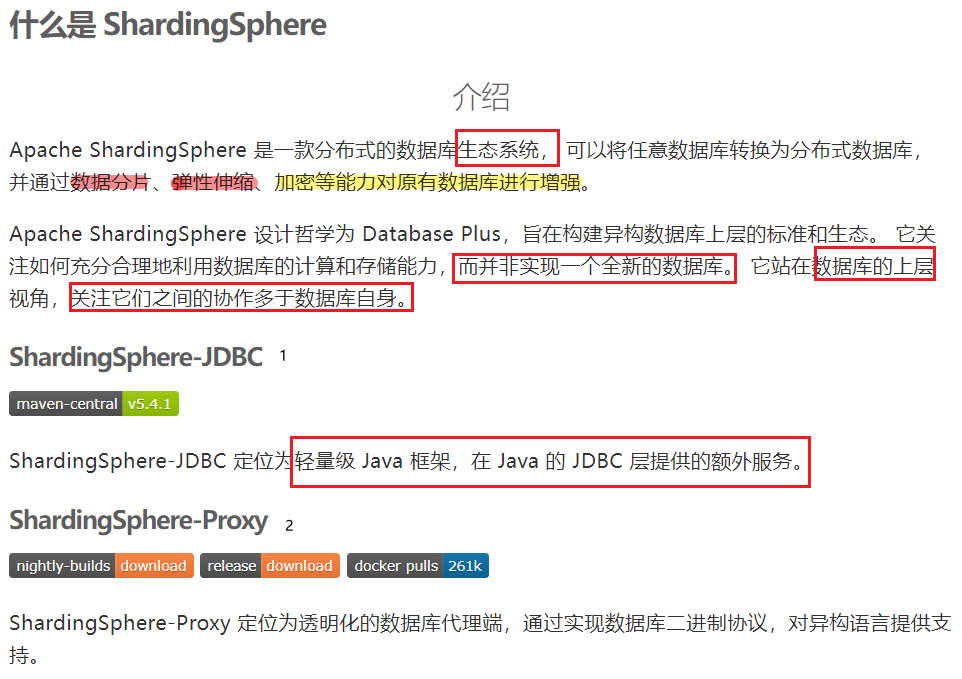
本篇文章只介绍 ShardingSphere-JDBC 的使用
功能
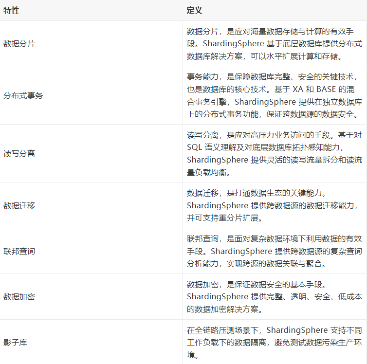
ShardingSphere-JDBC 的核心功能是数据分片和读写分离，通过 ShardingSphere=JDBC 应用可以透明的使用 JDBC 访问已经分库分表，读写分离的多个数据源，而不用关心数据源的数量以及数据如何分布。
在开始使用 SharedingSphere 之前在温习一下分库分表的基本要点：
分库分表的作用
- 加大存储
- 提升查询效率
- 提升数据库并发能力
分库分表策略的选择
- 分库分表一定要提前设计，尽量避免临时设计。只针对最核心的表
- 分库分表后，对表的查询尽量简单，不要有跨表，跨库的复杂查询
- 分库分表尽量同时进行，可以分担网络的压力
核心概念
- 逻辑表：水平拆分后，逻辑和数据结构相同的表的总称。user 被拆分成 user_1 user_2 ，user 就是逻辑表。
- 真实表：在分片数据库中真实存在的物理表，user_1 user_2 就是真实表
- 数据节点：数据分片的最小单元，有数据源名称和数据表组成。
- 绑定表：分片规则一致的主表和子表
- 广播表：也叫公共表，指的是在所有的分片数据源中都存在的表，结构和数据完全一致，一般是配置表，字典表，这种关联次数多，几乎不会发生变化，数据量小的表。
- 分片键：用于分片的数据库字段，是将数据库表水平拆分的关键字段，比如按照 id 取模分表。id 就是分片键，SQL 语句中如果不含分片键，将会执行全路由，性能会很差。
- 分片算法：通过分片算法将数据进行分片，支持通过 = BETWEEN IN 分片，算法需要开发者自行实现，灵活度高。
- 分片策略：真正用于分片操作的是分片键+分片算法，也就是分片策略。在 ShardingSphereJDBC 中，一般采用 Groovy 表达式来描述分片策略。如 inline 策略的描述：user_$->{u_id%8}, 它描述了根据 u_id 模 8，分成 8 张表，表名称是 user_0 到 user_7
分片策略介绍
- inline: 直接在配置文件中通过 Groovy 表达式实现分片策略，如：user_$->{u_id%8}, 只支持精确查找 ( = in)，不支持范围查找
- standard: 标准分片策略，用户通过编写分片精确查找和范围查找算法，实现自定义的分片，可以支持精确查找和范围查找，但是分片键只能有一个，也就是只能根据一列来进行分片
- complex： 复合分片，和标准分片一样，但是可以支持多个列对数据进行分片
- hint: 强制路由策略，不再由 SQL 决定如何分片，直接由用户指定分片参数
下面分别介绍这几种分片策略的使用：
准备工作
1. 数据库
准备两个数据库，建议使用 docker-compose 快速搭建
m1 数据源下的 sharing_1 库 m2 数据源下的 sharing_2 数据库
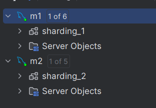
docker-compose.yml:
version: '3.8'
services:
mysql-master:
container_name: mysql-single
image: mysql:5.7.31
restart: always
ports:
- 3342:3306
privileged: true
volumes:
- $PWD/log:/var/log/mysql
- $PWD/my.cnf:/etc/mysql/my.cnf
- $PWD/data:/var/lib/mysql
environment:
MYSQL_ROOT_PASSWORD: "123456"
command: [
'--character-set-server=utf8mb4',
'--collation-server=utf8mb4_general_ci',
'--max_connections=3000'
]
2. 新建 SpringBoot 项目
要用到的依赖如下：
<properties>
<java.version>1.8</java.version>
<project.build.sourceEncoding>UTF-8</project.build.sourceEncoding>
<project.reporting.outputEncoding>UTF-8</project.reporting.outputEncoding>
<spring-boot.version>2.6.13</spring-boot.version>
</properties>
<dependencies>
<dependency>
<groupId>org.springframework.boot</groupId>
<artifactId>spring-boot-starter-web</artifactId>
</dependency>
<dependency>
<groupId>org.mybatis.spring.boot</groupId>
<artifactId>mybatis-spring-boot-starter</artifactId>
<version>2.2.2</version>
</dependency>
<dependency>
<groupId>org.apache.shardingsphere</groupId>
<artifactId>sharding-jdbc-spring-boot-starter</artifactId>
<version>4.1.1</version>
</dependency>
<dependency>
<groupId>org.springframework.boot</groupId>
<artifactId>spring-boot-starter-test</artifactId>
<scope>test</scope>
</dependency>
<dependency>
<groupId>com.alibaba</groupId>
<artifactId>druid</artifactId>
<version>1.1.22</version>
</dependency>
<dependency>
<groupId>mysql</groupId>
<artifactId>mysql-connector-java</artifactId>
</dependency>
<!-- 使用 mybatis plus 简化数据操作，专注 ShardingSphere JDBC 框架的使用-->
<dependency>
<groupId>com.baomidou</groupId>
<artifactId>mybatis-plus-boot-starter</artifactId>
<version>3.5.2</version>
</dependency>
<!-- 需要用到一些日期操作， 借助第三方工具包-->
<dependency>
<groupId>cn.hutool</groupId>
<artifactId>hutool-core</artifactId>
<version>5.8.23</version>
</dependency>
</dependencies>
<dependencyManagement>
<dependencies>
<dependency>
<groupId>org.springframework.boot</groupId>
<artifactId>spring-boot-dependencies</artifactId>
<version>${spring-boot.version}</version>
<type>pom</type>
<scope>import</scope>
</dependency>
</dependencies>
</dependencyManagement>
3. 在项目中配置数据源
在 application.properties 中添加数据源的配置：
# 配置多个数据源 m1 m2
spring.shardingsphere.datasource.names=m1,m2
spring.shardingsphere.datasource.m1.type=com.alibaba.druid.pool.DruidDataSource
spring.shardingsphere.datasource.m1.driver-class-name=com.mysql.cj.jdbc.Driver
spring.shardingsphere.datasource.m1.url=jdbc:mysql://192.168.11.12:3340/sharding_1?serverTimezone=GMT%2B8
spring.shardingsphere.datasource.m1.username=root
spring.shardingsphere.datasource.m1.password=123456
spring.shardingsphere.datasource.m2.type=com.alibaba.druid.pool.DruidDataSource
spring.shardingsphere.datasource.m2.driver-class-name=com.mysql.cj.jdbc.Driver
spring.shardingsphere.datasource.m2.url=jdbc:mysql://192.168.11.12:3342/sharding_2?serverTimezone=GMT%2B8
spring.shardingsphere.datasource.m2.username=root
spring.shardingsphere.datasource.m2.password=123456
4. 项目目录结构
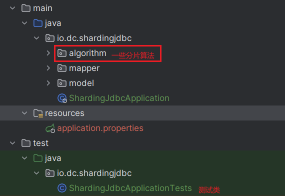
inline
1. 新建 course 表
ShardingSphere 不会帮助我们建表，只是将 SQL 解析成符合分表分库之后的实际 SQL
我们使用 course 表举例：
create table course_1
(
cid BIGINT(20) PRIMARY KEY,
cname VARCHAR(50) NOT NULL,
user_id BIGINT(20) NOT NULL,
cstatus varchar(10) NOT NULL
);
create table course_2
(
cid BIGINT(20) PRIMARY KEY,
cname VARCHAR(50) NOT NULL,
user_id BIGINT(20) NOT NULL,
cstatus varchar(10) NOT NULL
);
分别在两个数据库中执行 建表 sql。
2. 指定逻辑表与实际表的关系
在 application.properties 配置文件中添加：
# table.course 指定一个逻辑表是 course, 这个表不用真实存在
# course 是逻辑表， 他下面分布的真实表 course_1 course_2 groovy 表达方式
# course 逻辑表下面有 4 个真实表，分别是 m1:course_1 m1:course_2 m2:course_1 m2:course_2
spring.shardingsphere.sharding.tables.course.actual-data-nodes=m$->{1..2}.course_$->{1..2}
# 使用雪花算法生成 cid 列的内容
# 下面三行的配置指定了 course 表主键生成的策略，使用了雪花算法。它是一种效率较高的分布式 ID, 算法实现细节自行查阅。
spring.shardingsphere.sharding.tables.course.key-generator.column=cid
spring.shardingsphere.sharding.tables.course.key-generator.type=SNOWFLAKE
# 雪花算法需要的参数，可以不写
spring.shardingsphere.sharding.tables.course.key-generator.props.worker.id=2
# 分片算法， 选库，这里根据 cid 进行选择
spring.shardingsphere.sharding.tables.course.database-strategy.inline.sharding-column=cid
# 表达式可能的结果是 m1 m2
spring.shardingsphere.sharding.tables.course.database-strategy.inline.algorithm-expression=m$->{cid%2+1}
# 分片算法，选表
spring.shardingsphere.sharding.tables.course.table-strategy.inline.sharding-column=cid
# 结果表达式的结果可能是：course_1 course_2
spring.shardingsphere.sharding.tables.course.table-strategy.inline.algorithm-expression=course_$->{cid%2+1}
先选出所有符合条件的库，然后在每个库下选出复合条件的表。这里一共有四张表 m1:course_1 m1:course_2 m2:course_1 m2:course_2, 我们想要实现的效果是 cid 为奇数的放入 m2:course_2 cid 为偶数的放入 m1:course_1
【疑问】
这种分片下就用不到 m1:course_2 和 m2:course_1, 是不是这两张表就不用建了呢？
不是！ 原因可以看下面的实践
3. 编写实体类
如下：
Course.java:
package io.dc.shardingjdbc.model;
import com.baomidou.mybatisplus.annotation.TableId;
/**
* @author dc on 2023/12/4
*/
public class Course {
// 使用雪花算法生成 id 时， 这里要用 Long 而不是 long
@TableId
private Long cid;
private String cname;
private Long userId;
private String cstatus;
public Long getCid() {
return cid;
}
public void setCid(Long cid) {
this.cid = cid;
}
public String getCname() {
return cname;
}
public void setCname(String cname) {
this.cname = cname;
}
public Long getUserId() {
return userId;
}
public void setUserId(Long userId) {
this.userId = userId;
}
public String getCstatus() {
return cstatus;
}
public void setCstatus(String cstatus) {
this.cstatus = cstatus;
}
@Override
public String toString() {
return "Course{" +
"cid=" + cid +
", cname='" + cname + '\'' +
", userId=" + userId +
", cstatus='" + cstatus + '\'' +
'}';
}
}
4. 测试插入
在测试类中：
@Test
public void addCourse() {
for (int i = 1; i <= 200; i++) {
Course c = new Course();
// 注意，因为使用了雪花算法生成 cid，这里不要手动设置
// c.setCid(Long.valueOf(i));
c.setCname("xxx");
c.setUserId(Long.valueOf(1000 + i));
c.setCstatus("1");
courseMapper.insert(c);
}
}
执行这个测试方法，控制台部分输出如下：
2023-12-09 18:36:05.455 INFO 22524 --- [main] ShardingSphere-SQL:Logic SQL: INSERT INTO course ( cid, cname, user_id, cstatus ) VALUES ( ?, ?, ?, ? )
2023-12-09 18:36:05.455 INFO 22524 --- [main] ShardingSphere-SQL: Actual SQL: m2 ::: INSERT INTO course_2 ( cid, cname, user_id, cstatus ) VALUES (?, ?, ?, ?) ::: [1733435338651176961, xxx, 1001, 1]
插入一条数据产生两条 sql，一条是逻辑 sql，一条是真实 sql，并且真实 sql 是插入到了 m2:course_2 中，cid 是奇数。复合我们的配置，下面看下数据库的数据分布：
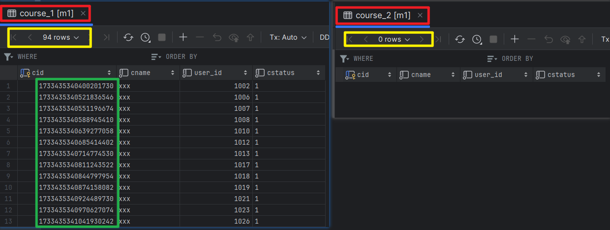
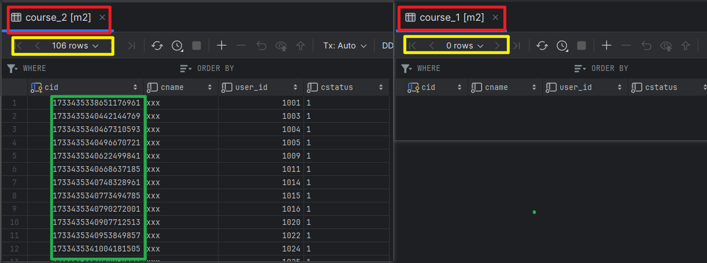
可以看到，m1:course_1 cid 都是偶数，m1:course_2 为空 m2:course_1 cid 为空，m2:course_2 都是奇数
5. 测试全表查询
添加测试方法，测试全表查询
@Test
public void queryCourse() {
System.out.println("全表查询");
// mybatis plus 写法
QueryWrapper<Course> wrapper = new QueryWrapper<>();
wrapper.orderByDesc("cid").orderByDesc("user_id");
List<Course> courseList = courseMapper.selectList(wrapper);
for (Course course : courseList) {
System.out.println(course);
}
}
运行测试方法，控制台部分输出：
全表查询
2023-12-09 18:50:35.066 INFO 17952 --- [main] ShardingSphere-SQL: Logic SQL: SELECT cid,cname,user_id,cstatus FROM course ORDER BY cid DESC,user_id DESC
2023-12-09 18:50:35.067 INFO 17952 --- [main] ShardingSphere-SQL: Actual SQL: m1 ::: SELECT cid,cname,user_id,cstatus FROM course_1 ORDER BY cid DESC,user_id DESC
2023-12-09 18:50:35.067 INFO 17952 --- [main] ShardingSphere-SQL: Actual SQL: m1 ::: SELECT cid,cname,user_id,cstatus FROM course_2 ORDER BY cid DESC,user_id DESC
2023-12-09 18:50:35.067 INFO 17952 --- [main] ShardingSphere-SQL: Actual SQL: m2 ::: SELECT cid,cname,user_id,cstatus FROM course_1 ORDER BY cid DESC,user_id DESC
2023-12-09 18:50:35.067 INFO 17952 --- [main] ShardingSphere-SQL: Actual SQL: m2 ::: SELECT cid,cname,user_id,cstatus FROM course_2 ORDER BY cid DESC,user_id DESC
Course{cid=1733435344938438657, cname='xxx', userId=1200, cstatus='1'}
Course{cid=1733435344904884226, cname='xxx', userId=1199, cstatus='1'}
Course{cid=1733435344883912706, cname='xxx', userId=1198, cstatus='1'}
.... 省略
因为没有用到分片键，产生了四条真实 sql，四张表都查了一遍。这个案例可解上面的疑问，为什么用不到表还要建出来。也许可以调整 groovy 表达式的写法，只需见 2 张表就行了。后面调研一下。
6. 精确查询
添加测试方法：
@Test
public void queryCourseById() {
System.out.println("按照 Id 查询");
QueryWrapper<Course> wrapper = new QueryWrapper<>();
wrapper.eq("cid", 1733435340907712513L);
List<Course> courseList = courseMapper.selectList(wrapper);
System.out.println("按照 ID");
for (Course course : courseList) {
System.out.println(course);
}
wrapper.clear();
System.out.println("in 查询");
wrapper.in("cid", Arrays.asList(1733435340953849857L, 1733435340844797954L));
courseList = courseMapper.selectList(wrapper);
for (Course course : courseList) {
System.out.println(course);
}
}
运行测试方法，控制台输出：
按照 Id 查询
2023-12-09 19:19:00.664 INFO 14872 --- [main] ShardingSphere-SQL: Logic SQL: SELECT cid,cname,user_id,cstatus FROM course WHERE (cid = ?)
2023-12-09 19:19:00.664 INFO 14872 --- [main] ShardingSphere-SQL: Actual SQL: m2 ::: SELECT cid,cname,user_id,cstatus FROM course_2 WHERE (cid = ?) ::: [1733435340907712513]
按照 ID
Course{cid=1733435340907712513, cname='xxx', userId=1020, cstatus='1'}
in 查询
2023-12-09 19:19:00.714 INFO 14872 --- [main] ShardingSphere-SQL: Logic SQL: SELECT cid,cname,user_id,cstatus FROM course WHERE (cid IN (?,?))
2023-12-09 19:19:00.714 INFO 14872 --- [main] ShardingSphere-SQL: Actual SQL: m1 ::: SELECT cid,cname,user_id,cstatus FROM course_1 WHERE (cid IN (?,?)) ::: [1733435340953849857, 1733435340844797954]
2023-12-09 19:19:00.714 INFO 14872 --- [main] ShardingSphere-SQL: Actual SQL: m1 ::: SELECT cid,cname,user_id,cstatus FROM course_2 WHERE (cid IN (?,?)) ::: [1733435340953849857, 1733435340844797954]
2023-12-09 19:19:00.714 INFO 14872 --- [main] ShardingSphere-SQL: Actual SQL: m2 ::: SELECT cid,cname,user_id,cstatus FROM course_1 WHERE (cid IN (?,?)) ::: [1733435340953849857, 1733435340844797954]
2023-12-09 19:19:00.714 INFO 14872 --- [main] ShardingSphere-SQL: Actual SQL: m2 ::: SELECT cid,cname,user_id,cstatus FROM course_2 WHERE (cid IN (?,?)) ::: [1733435340953849857, 1733435340844797954]
Course{cid=1733435340844797954, cname='xxx', userId=1018, cstatus='1'}
Course{cid=1733435340953849857, cname='xxx', userId=1022, cstatus='1'}
按照 Id 查询，只产生了一条 SQL，根据我们设置的分片算法直接定位到 m2:cour2 表。
按照 in 查询，进行了全表路由
7. 范围查询
添加测试方法：
@Test
public void queryCourseByRange() {
System.out.println("按照 Id 范围查询");
QueryWrapper<Course> wrapper = new QueryWrapper<>();
wrapper.between("cid", 938561391969701888L, 938561392535932929L);
List<Course> courseList = courseMapper.selectList(wrapper);
for (Course course : courseList) {
System.out.println(course);
}
// 在 inline 策略下，不支持范围查询
}
执行报错：
org.mybatis.spring.MyBatisSystemException: nested exception is org.apache.ibatis.exceptions.PersistenceException:
### Error querying database. Cause: java.lang.IllegalStateException: Inline strategy cannot support this type sharding:RangeRouteValue(columnName=cid, tableName=course, valueRange=[938561391969701888‥938561392535932929])
报错信息是 inline 策略不支持范围查询。
由于这个策略不支持范围查询，灵活度远远不够，接下来看支持范围查询的 stander 策略
standard
standard 策略我们用 dept 表验证：
1. 创建表
分别在两个数据库中执行
drop table if exists dept_1;
create table dept_1
(
did BIGINT(20) PRIMARY KEY,
name VARCHAR(10) NOT NULL,
user_num int NOT NULL default 0
);
drop table if exists dept_2;
create table dept_2
(
did BIGINT(20) PRIMARY KEY,
name VARCHAR(10) NOT NULL,
user_num int NOT NULL default 0
);
2. 添加配置
# 指定逻辑表和真实表的对应关系
spring.shardingsphere.sharding.tables.dept.actual-data-nodes=m$->{1..2}.dept_$->{1..2}
# 使用雪花算法生成 did 列的内容
spring.shardingsphere.sharding.tables.dept.key-generator.column=did
spring.shardingsphere.sharding.tables.dept.key-generator.type=SNOWFLAKE
## 标准策略分片
## 分表时选择 did 作为分片键
spring.shardingsphere.sharding.tables.dept.table-strategy.standard.sharding-column=did
# 支持精确查询和范围查询，都需要自己实现分片算法
# 精确查询时选择表
spring.shardingsphere.sharding.tables.dept.table-strategy.standard.precise-algorithm-class-name=io.dc.shardingjdbc.algorithm.DeptTablePreciseAlgorithm
# 范围查询时选择表
spring.shardingsphere.sharding.tables.dept.table-strategy.standard.range-algorithm-class-name=io.dc.shardingjdbc.algorithm.DeptTableRangeAlgorithm
## 分库时选择 did 作为分片键
spring.shardingsphere.sharding.tables.dept.database-strategy.standard.sharding-column=did
# 精确查询时选择库
spring.shardingsphere.sharding.tables.dept.database-strategy.standard.precise-algorithm-class-name=io.dc.shardingjdbc.algorithm.DeptDsPreciseAlgorithm
# 范围查询时选择库
spring.shardingsphere.sharding.tables.dept.database-strategy.standard.range-algorithm-class-name=io.dc.shardingjdbc.algorithm.DeptDsRangeAlgorithm
3. 创建实体类和 Mapper
实体类 Dept.java
package io.dc.shardingjdbc.model;
/**
* @author dc on 2023/12/6
*/
public class Dept {
private Long did;
private Integer userNum;
private String name;
public Long getDid() {
return did;
}
public void setDid(Long did) {
this.did = did;
}
public Integer getUserNum() {
return userNum;
}
public void setUserNum(Integer userNum) {
this.userNum = userNum;
}
public String getName() {
return name;
}
public void setName(String name) {
this.name = name;
}
@Override
public String toString() {
return "Dept{" +
"did=" + did +
", userNum=" + userNum +
", name='" + name + '\'' +
'}';
}
}
DeptMapper.java
package io.dc.shardingjdbc.mapper;
import com.baomidou.mybatisplus.core.mapper.BaseMapper;
import io.dc.shardingjdbc.model.Dept;
import io.dc.shardingjdbc.model.User;
/**
* @author dc on 2023/12/4
*/
public interface DeptMapper extends BaseMapper<Dept> {
}
4. 算法实现【重点】
假如想要 did 最后一位等于 1 的放到 m1:dept_1 中，其他情况放入 m2:dept_2 中
分库算法：
在配置文件中已经配置 分库算法的类名：DeptDsPreciseAlgorithm 和 DeptDsRangeAlgorithm, 下面开始实现这两种算法：
DeptDsPreciseAlgorithm.java
package io.dc.shardingjdbc.algorithm;
import org.apache.shardingsphere.api.sharding.standard.PreciseShardingAlgorithm;
import org.apache.shardingsphere.api.sharding.standard.PreciseShardingValue;
import java.util.Collection;
/**
* @author dc on 2023/12/5
* PreciseShardingAlgorithm<T> 实现精确查询分片算法 T 是分片键的类型
*/
public class DeptDsPreciseAlgorithm implements PreciseShardingAlgorithm<Long> {
/**
*
* @param databases 已经配置的数据源
* @param preciseShardingValue 分片键相关信息， 包含分片键和逻辑表
* @return 从哪个库中查询（插入）。因为这是精确分片，只会返回一个值
*/
@Override
public String doSharding(Collection<String> databases, PreciseShardingValue<Long> preciseShardingValue) {
System.out.println("dept 库精确");
// 获取分片键的值
Long cid = preciseShardingValue.getValue();
if(cid % 10 == 1){
System.out.println("在 m1 库中查找");
return "m1";
}
System.out.println("在 m2 库中查找");
return "m2";
}
}
接下来看范围查询算法实现：
DeptDsRangeAlgorithm.java
package io.dc.shardingjdbc.algorithm;
import org.apache.shardingsphere.api.sharding.standard.RangeShardingAlgorithm;
import org.apache.shardingsphere.api.sharding.standard.RangeShardingValue;
import java.util.Collection;
/**
* @author dc on 2023/12/5
* 实现 RangeShardingAlgorithm<Long> 接口
*/
public class DeptDsRangeAlgorithm implements RangeShardingAlgorithm<Long> {
/**
* @param databases 配置的数据源
* @param rangeShardingValue 分片相关信息
* @return 因为是范围查询，可能要在多个数据源中才能找到所有数据，所以返回值是集合
*/
@Override
public Collection<String> doSharding(Collection<String> databases, RangeShardingValue<Long> rangeShardingValue) {
// 获取范围查询中范围的最小值
Long min = rangeShardingValue.getValueRange().lowerEndpoint();
// 获取范围查询中范围的最大值
Long max = rangeShardingValue.getValueRange().upperEndpoint();
// 获取逻辑表名
String logicTableName = rangeShardingValue.getLogicTableName();
// 获取分片键列的名字
String columnName = rangeShardingValue.getColumnName();
// 范围查询需要在所有的库中查询， 暂时没有想到好的案例，没有用到上面几个变量，仅仅做演示
return databases;
}
}
分表算法
与分库算法差不多
DeptTablePreciseAlgorithm.java
package io.dc.shardingjdbc.algorithm;
import org.apache.shardingsphere.api.sharding.standard.PreciseShardingAlgorithm;
import org.apache.shardingsphere.api.sharding.standard.PreciseShardingValue;
import java.math.BigInteger;
import java.util.Collection;
/**
* @author dc on 2023/12/5
*/
public class DeptTablePreciseAlgorithm implements PreciseShardingAlgorithm<Long> {
@Override
public String doSharding(Collection<String> availableTargetNames, PreciseShardingValue<Long> preciseShardingValue) {
System.out.println("dept 表精确");
Long cid = preciseShardingValue.getValue();
String logicTable = preciseShardingValue.getLogicTableName();
String actualTable = logicTable + "_";
if (cid % 10 == 1) {
actualTable += "1";
System.out.println("在 " + actualTable+ " 中查找");
return actualTable;
}
actualTable += "2";
System.out.println("在 " + actualTable+ " 中查找");
return actualTable;
}
}
DeptTableRangeAlgorithm.java
package io.dc.shardingjdbc.algorithm;
import org.apache.shardingsphere.api.sharding.standard.RangeShardingAlgorithm;
import org.apache.shardingsphere.api.sharding.standard.RangeShardingValue;
import java.util.Collection;
/**
* @author dc on 2023/12/5
*/
public class DeptTableRangeAlgorithm implements RangeShardingAlgorithm<Long> {
@Override
public Collection<String> doSharding(Collection<String> tableNames, RangeShardingValue<Long> rangeShardingValue) {
System.out.println("===========range================");
// 范围查询应该在所有表中都查一遍
return tableNames;
}
}
5. 测试插入
添加测试方法：
@Test
public void insertDept() {
for (int i = 0; i < 100; i++) {
Dept dept = new Dept();
dept.setUserNum((i +1) * 200);
dept.setName("测试标准策略_" + i);
deptMapper.insert(dept);
}
}
执行方法后，查看数据库如下：
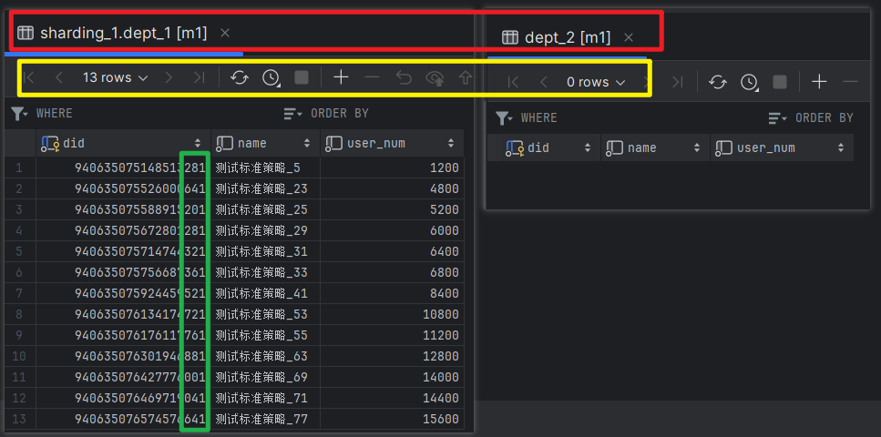
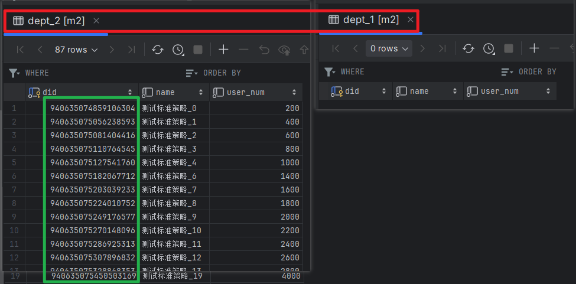
发现数据分布正如分片算法一致，did 追后一位等于 1 的都在 m1:dept_1，下面测试一下查询
6. 测试精确查询
新建测试方法：
@Test
public void queryDept() {
QueryWrapper<Dept> wrapper = new QueryWrapper<>();
wrapper.eq("did",940635075672801281L);
List<Dept> deptList = deptMapper.selectList(wrapper);
for (Dept dept : deptList) {
System.out.println(dept);
}
}
执行方法，控制台有如下输出：
dept 库精确
在 m1 库中查找
dept 表精确
在 dept_1 中查找
2023-12-10 15:55:33.006 INFO 19080 --- [main] ShardingSphere-SQL: Logic SQL: SELECT did,user_num,name FROM dept WHERE (did = ?)
2023-12-10 15:55:33.006 INFO 19080 --- [main] ShardingSphere-SQL: Actual SQL: m1 ::: SELECT did,user_num,name FROM dept_1 WHERE (did = ?) ::: [940635075672801281]
Dept{did=940635075672801281, userNum=6000, name='测试标准策略_29'}
走了精确查询算法，所以只产生了一条真实 SQL
7. 测试范围查询
添加测试方法：
@Test
public void queryDeptRange() {
QueryWrapper<Dept> wrapper = new QueryWrapper<>();
wrapper.between("did",940635075672801281L, 940635076750737408L);
List<Dept> deptList = deptMapper.selectList(wrapper);
for (Dept dept : deptList) {
System.out.println(dept);
}
}
执行方法，控制台有如下部分输出：
2023-12-10 16:02:04.018 INFO 23444 --- [main] ShardingSphere-SQL: Logic SQL: SELECT did,user_num,name FROM dept WHERE (did BETWEEN ? AND ?)
2023-12-10 16:02:04.018 INFO 23444 --- [main] ShardingSphere-SQL: Actual SQL: m1 ::: SELECT did,user_num,name FROM dept_1 WHERE (did BETWEEN ? AND ?) ::: [940635075672801281, 940635076750737408]
2023-12-10 16:02:04.019 INFO 23444 --- [main] ShardingSphere-SQL: Actual SQL: m1 ::: SELECT did,user_num,name FROM dept_2 WHERE (did BETWEEN ? AND ?) ::: [940635075672801281, 940635076750737408]
2023-12-10 16:02:04.019 INFO 23444 --- [main] ShardingSphere-SQL: Actual SQL: m2 ::: SELECT did,user_num,name FROM dept_1 WHERE (did BETWEEN ? AND ?) ::: [940635075672801281, 940635076750737408]
2023-12-10 16:02:04.019 INFO 23444 --- [main] ShardingSphere-SQL: Actual SQL: m2 ::: SELECT did,user_num,name FROM dept_2 WHERE (did BETWEEN ? AND ?) ::: [940635075672801281, 940635076750737408]
Dept{did=940635075672801281, userNum=6000, name='测试标准策略_29'}
Dept{did=940635075714744321, userNum=6400, name='测试标准策略_31'}
Dept{did=940635075756687361, userNum=6800, name='测试标准策略_33'}
Dept{did=940635075924459521, userNum=8400, name='测试标准策略_41'}
Dept{did=940635076134174721, userNum=10800, name='测试标准策略_53'}
Dept{did=940635076176117761, userNum=11200, name='测试标准策略_55'}
Dept{did=940635076301946881, userNum=12800, name='测试标准策略_63'}
产生了 4 条 SQL，符合分片算法
complex
上面两种策略的分片键只能是单个， 复合策略可以支持多个分片键。
用 message 来演示：
1. 创建 message 表
drop table message_1;
create table message_1
(
mid BIGINT(20) PRIMARY KEY,
body VARCHAR(500) NOT NULL,
created_time BIGINT(20) NOT NULL,
created_time_str char(19) NOT NULL,
type BIGINT(20) NOT NULL
);
drop table message_2;
create table message_2
(
mid BIGINT(20) PRIMARY KEY,
body VARCHAR(500) NOT NULL,
type BIGINT(20) NOT NULL,
created_time_str char(19) NOT NULL,
created_time BIGINT(20) NOT NULL
);
drop table message_3;
create table message_3
(
mid BIGINT(20) PRIMARY KEY,
body VARCHAR(500) NOT NULL,
type BIGINT(20) NOT NULL,
created_time_str char(19) NOT NULL,
created_time BIGINT(20) NOT NULL
);
分别在两个数据源中执行
2. 创建实体类和 Mapper
package io.dc.shardingjdbc.model;
import com.baomidou.mybatisplus.annotation.TableId;
/**
* @author dc on 2023/12/6
*/
public class Message {
/**
* 消息 id
*/
@TableId
private Long mid;
/**
* 消息文本
*/
private String body;
/**
* 消息类型
*/
private Long type;
/**
* 消息创建时间
*/
private Long createdTime;
private String createdTimeStr;
public Long getMid() {
return mid;
}
public void setMid(Long mid) {
this.mid = mid;
}
public String getBody() {
return body;
}
public void setBody(String body) {
this.body = body;
}
public Long getCreatedTime() {
return createdTime;
}
public void setCreatedTime(Long createdTime) {
this.createdTime = createdTime;
}
public Long getType() {
return type;
}
public void setType(Long type) {
this.type = type;
}
public String getCreatedTimeStr() {
return createdTimeStr;
}
public void setCreatedTimeStr(String createdTimeStr) {
this.createdTimeStr = createdTimeStr;
}
@Override
public String toString() {
return "Message{" +
"mid=" + mid +
", body='" + body + '\'' +
", type=" + type +
", createdTime=" + createdTime +
", createdTimeStr='" + createdTimeStr + '\'' +
'}';
}
}
Mapper:
package io.dc.shardingjdbc.mapper;
import com.baomidou.mybatisplus.core.mapper.BaseMapper;
import io.dc.shardingjdbc.model.Course;
import io.dc.shardingjdbc.model.Message;
public interface MessageMapper extends BaseMapper<Message> {
}
3. 添加分片配置
# 对 message 表进行分表分库， 采用复杂策略
spring.shardingsphere.sharding.tables.message.actual-data-nodes=m$->{1..2}.message_$->{1..3}
spring.shardingsphere.sharding.tables.message.key-generator.column=mid
spring.shardingsphere.sharding.tables.message.key-generator.type=SNOWFLAKE
# 雪花算法需要的参数，可以不写（工作机器编号，生成分布式 id 需要）
spring.shardingsphere.sharding.tables.message.key-generator.props.worker.id=2
# 复杂策略分片
# 分片键
spring.shardingsphere.sharding.tables.message.table-strategy.complex.sharding-columns=type,created_time
spring.shardingsphere.sharding.tables.message.table-strategy.complex.algorithm-class-name=io.dc.shardingjdbc.algorithm.MessageTableComplexSharing
spring.shardingsphere.sharding.tables.message.database-strategy.complex.sharding-columns=type,created_time
spring.shardingsphere.sharding.tables.message.database-strategy.complex.algorithm-class-name=io.dc.shardingjdbc.algorithm.MessageDatabaseComplexSharing
写法和标准策略一样，只是不再区分精确查找，还是范围查找，由算法来负责实现
想实现如下分片功能
- 消息类型 (type) 等于 1，并且 消息创建时间 (created_time) 小于 20231201 放入 m1:message_1 中
- 消息类型 (type) 等于 2，并且 消息创建时间 (created_time) 大于 20231201 放入 m1:message_2 中
- 其他情况放入 m1:message_3
下面直接看分片算法如何实现
4. 分片算法
分库
package io.dc.shardingjdbc.algorithm;
import cn.hutool.core.date.DateUtil;
import com.google.common.collect.Range;
import org.apache.shardingsphere.api.sharding.complex.ComplexKeysShardingAlgorithm;
import org.apache.shardingsphere.api.sharding.complex.ComplexKeysShardingValue;
import org.springframework.util.ObjectUtils;
import java.util.ArrayList;
import java.util.Collection;
/**
* @author dc on 2023/12/6
*/
public class MessageDatabaseComplexSharing implements ComplexKeysShardingAlgorithm<Long> {
/**
* 将消息类型为 1 的，并且时间在 2023-12-01 之前的插入 m1 库 message_1 表中
* 将消息类型为 2 的，并且时间在 2023-12-01 之后的插入 m2 库 message_2 表中
* 其他情况数据在 m1 库中的 message_3
*/
@Override
public Collection<String> doSharding(Collection<String> collection, ComplexKeysShardingValue<Long> complexKeysShardingValue) {
// 获取精确查找的字段
Collection<Long> typeList = complexKeysShardingValue.getColumnNameAndShardingValuesMap().get("type");
Collection<Long> createdTimeList = complexKeysShardingValue.getColumnNameAndShardingValuesMap().get("created_time");
// 获取范围类型的字段
Range<Long> typeRange = complexKeysShardingValue.getColumnNameAndRangeValuesMap().get("type");
Range<Long> createdTimeRange = complexKeysShardingValue.getColumnNameAndRangeValuesMap().get("created_time");
Collection<String> databases = new ArrayList<>();
long now = DateUtil.parse("20231201").getTime();
// 两个字段都是精确值
if (!ObjectUtils.isEmpty(typeList) && !ObjectUtils.isEmpty(createdTimeList)) {
System.out.println("选库： type 和 created_time 都是精确查找");
for (Long type : typeList) {
for (Long createTime : createdTimeList) {
if (type.equals(1L) && createTime.compareTo(now) < 0) {
databases.add("m1");
} else if (type.equals(2L) && createTime.compareTo(now) > 0) {
databases.add("m2");
} else {
databases.add("m1");
}
}
}
System.out.println("选中的库有");
for (String database : databases) {
System.out.println(database);
}
return databases;
}
// type 是精确值， created_time 是范围值，如：
// type = 1 and (created_time between ('20231202','20231204'))
if (!ObjectUtils.isEmpty(typeList) && !ObjectUtils.isEmpty(createdTimeRange)) {
System.out.println("选库： type 是精确查找，created_time 是范围查找");
Long min = createdTimeRange.lowerEndpoint();
Long max = createdTimeRange.upperEndpoint();
// 根据分片规则
for (Long type : typeList) {
if (type.equals(1L) && max.compareTo(now) < 0) {
databases.add("m1");
} else if (type.equals(2L) && min.compareTo(now) > 0) {
databases.add("m2");
} else {
databases.add("m1");
}
}
System.out.println("选中的库有");
for (String database : databases) {
System.out.println(database);
}
return databases;
}
System.out.println("选库：其他情况在所有的数据库中查找");
return collection;
}
}
分表
package io.dc.shardingjdbc.algorithm;
import cn.hutool.core.date.DateUtil;
import com.google.common.collect.Range;
import org.apache.shardingsphere.api.sharding.complex.ComplexKeysShardingAlgorithm;
import org.apache.shardingsphere.api.sharding.complex.ComplexKeysShardingValue;
import org.springframework.util.ObjectUtils;
import java.util.ArrayList;
import java.util.Collection;
/**
* @author dc on 2023/12/6
* 将消息类型为 1 的，并且时间在 2023-12-01 之前的插入 m1 库 message_1 表中
* 将消息类型为 2 的，并且时间在 2023-12-01 之后的插入 m2 库 message_2 表中
* 其他情况数据在 m1 库中的 message_3
*/
public class MessageTableComplexSharing implements ComplexKeysShardingAlgorithm<Long> {
@Override
public Collection<String> doSharding(Collection<String> collection, ComplexKeysShardingValue<Long> complexKeysShardingValue) {
// 获取精确查找的字段
Collection<Long> typeList = complexKeysShardingValue.getColumnNameAndShardingValuesMap().get("type");
Collection<Long> createdTimeList = complexKeysShardingValue.getColumnNameAndShardingValuesMap().get("created_time");
// 获取范围类型的字段
Range<Long> typeRange = complexKeysShardingValue.getColumnNameAndRangeValuesMap().get("type");
Range<Long> createdTimeRange = complexKeysShardingValue.getColumnNameAndRangeValuesMap().get("created_time");
Collection<String> tables = new ArrayList<>();
String logicTable = complexKeysShardingValue.getLogicTableName();
long now = DateUtil.parse("20231201").getTime();
// 规则 1： 两个字段都是精确值，数据插入时唯一命中的。因为不可能插入一个范围吧
if (!ObjectUtils.isEmpty(typeList) && !ObjectUtils.isEmpty(createdTimeList)) {
System.out.println("选表： type 和 created_time 都是精确查找");
for (Long type : typeList) {
for (Long createTime : createdTimeList) {
if (type.equals(1L) && createTime.compareTo(now) < 0) {
tables.add(logicTable + "_1");
} else if (type.equals(2L) && createTime.compareTo(now) > 0) {
tables.add(logicTable + "_2");
} else {
tables.add(logicTable + "_3");
}
}
}
System.out.println("选中的表有：");
for (String table : tables) {
System.out.println(table);
}
return tables;
}
// 规则 2: type 是精确值， created_time 是范围值，如：type = 1 and (created_time between ('20231202','20231204'))
if (!ObjectUtils.isEmpty(typeList) && !ObjectUtils.isEmpty(createdTimeRange)) {
System.out.println("选库： type 是精确查找，created_time 是范围查找");
Long min = createdTimeRange.lowerEndpoint();
Long max = createdTimeRange.upperEndpoint();
// 根据分片规则
for (Long type : typeList) {
if (type.equals(1L) && max.compareTo(now) < 0) {
tables.add(logicTable + "_1");
} else if (type.equals(2L) && min.compareTo(now) > 0) {
tables.add(logicTable + "_2");
} else {
tables.add(logicTable + "_3");
}
}
System.out.println("选中的表有：");
for (String table : tables) {
System.out.println(table);
}
return tables;
}
System.out.println("选表：其他情况在所有的数据库中查找");
return collection;
}
}
5. 测试插入
添加测试方法：
@Test
public void insertMessage() {
// 创建时间 分布在 20231201 前后
List<Date> dateList = new ArrayList<>();
dateList.add(DateUtil.parse("20231101"));
dateList.add(DateUtil.parse("20231102"));
dateList.add(DateUtil.parse("20231103"));
dateList.add(DateUtil.parse("20231201"));
dateList.add(DateUtil.parse("20231202"));
dateList.add(DateUtil.parse("20231203"));
dateList.add(DateUtil.parse("20231204"));
for (int i = 0; i < 100; i++) {
Message message = new Message();
message.setBody("测试分库分表" + i);
// type 取值范围 [0 1 2]
message.setType((long) (i % 3));
Date date = dateList.get(i % dateList.size());
message.setCreatedTime(date.getTime());
message.setCreatedTimeStr(DateUtil.format(date, "yyyy-MM-dd HH:mm:ss"));
messageMapper.insert(message);
}
}
执行测试方法，查看数据分布：
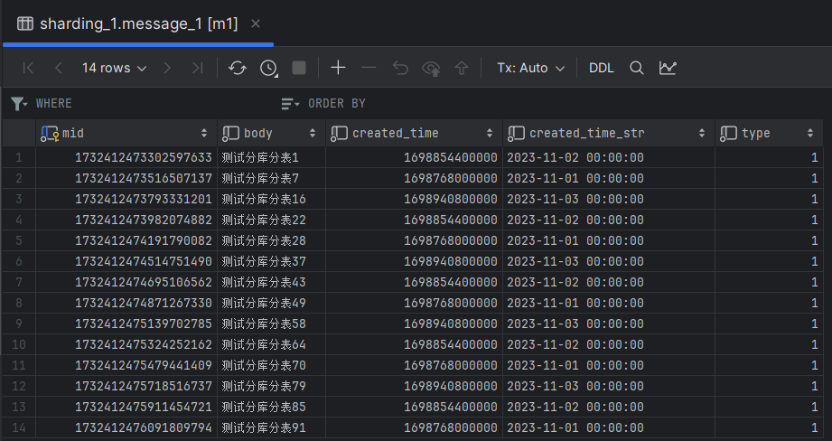
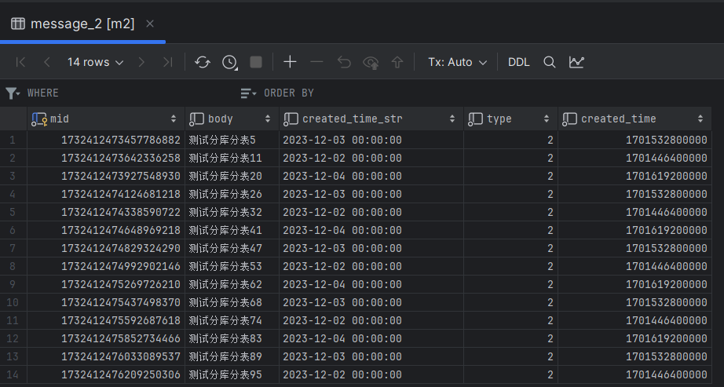
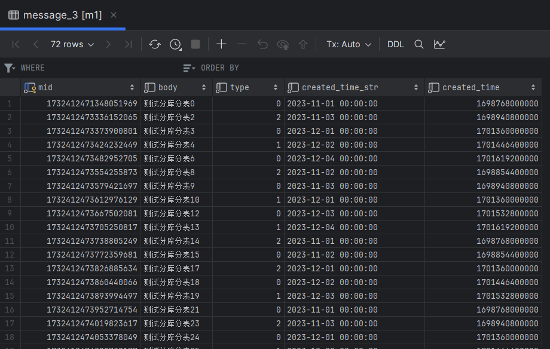
可以看出数据分布复合分片算法设置的规则
6. 测试查询
/**
* 符合规则 1，应该只在 m1:message_1 中查找
*/
@Test
public void queryMessageEq() {
QueryWrapper<Message> wrapper = new QueryWrapper<>();
wrapper.eq("type", 1L).eq("created_time", DateUtil.parse("20231102").getTime());
List<Message> messages = messageMapper.selectList(wrapper);
for (Message message : messages) {
System.out.println(message);
}
}
/**
* = 和 in 仍然属于精确查找，type = 1 and created_time in (20231102,20231203)
* 应该在 m1:message_1 和 m1:message_3 查找
*/
@Test
public void queryMessageIn() {
QueryWrapper<Message> wrapper = new QueryWrapper<>();
wrapper.eq("type", 1L);
wrapper.in("created_time", DateUtil.parse("20231102").getTime(), DateUtil.parse("20231203").getTime());
List<Message> messages = messageMapper.selectList(wrapper);
for (Message message : messages) {
System.out.println(message);
}
}
/**
* = 和 in 仍然属于精确查找，type = 2 and created_time in (20231102,20231203)
* 应该在 m2:message_2 和 m1:message_3 查找
* 但是实际输出的 SQL 是 m1:message_2 m1:messsage_3 m2:message_2 m3:message_3
* 我猜测他的工作原理如下：
* 1. 先根据要查找的数据找出数据库： 2 和 20231102 结合得出要在 m1 中查找；2 和 20231203 结合得出要在 m2 中查找
* 2. 再根据要查找的数据找出表： 2 和 20231102 结合得出要在 message_3 中查找；2 和 20231203 结合得出要在 message_2 中查找
* 3. [m1 m2] 和 [message_2 message_3] 交叉结合 即： m1:message_2 m1:message_3 m2:message_2 m2:message_3
* 所以是 4 条 sql。该规则适用于上面 queryMessageIn 方法
*/
@Test
public void queryMessageIn2() {
QueryWrapper<Message> wrapper = new QueryWrapper<>();
wrapper.eq("type", 2L);
wrapper.in("created_time", DateUtil.parse("20231102").getTime(), DateUtil.parse("20231203").getTime());
List<Message> messages = messageMapper.selectList(wrapper);
for (Message message : messages) {
System.out.println(message);
}
}
请读者自行测试
hint
强制路由策略，不再根据 SQL 来选择分表分库，而是直接有用户指定
配置如下：
# 对 user 表采用强制路由策略
spring.shardingsphere.sharding.tables.user.actual-data-nodes=m$->{1..2}.user_$->{1..2}
spring.shardingsphere.sharding.tables.user.key-generator.column=uid
spring.shardingsphere.sharding.tables.user.key-generator.type=snowflake
spring.shardingsphere.sharding.tables.user.key-generator.props.worker.id=2
# 强制路由策略分片，没有分片键，因为它不再依赖 sql 了。在程序中直接指定
spring.shardingsphere.sharding.tables.user.table-strategy.hint.algorithm-class-name=io.dc.shardingjdbc.algorithm.UserTableHintSharding
spring.shardingsphere.sharding.tables.user.database-strategy.hint.algorithm-class-name=io.dc.shardingjdbc.algorithm.UserDatabaseHintSharding
创建表，实体类和 Mapper
drop table if exists user_1;
create table user_1
(
uid BIGINT(20) PRIMARY KEY,
name VARCHAR(10) NOT NULL,
age int NOT NULL,
sex tinyint NOT NULL
);
drop table if exists user_2;
create table user_2
(
uid BIGINT(20) PRIMARY KEY,
name VARCHAR(10) NOT NULL,
age int NOT NULL,
sex tinyint NOT NULL
);
package io.dc.shardingjdbc.model;
import com.baomidou.mybatisplus.annotation.TableId;
/**
* @author dc on 2023/12/6
*/
public class User {
private Long uid;
private Integer sex;
private Integer age;
private String name;
public Long getUid() {
return uid;
}
public void setUid(Long uid) {
this.uid = uid;
}
public Integer getSex() {
return sex;
}
public void setSex(Integer sex) {
this.sex = sex;
}
public Integer getAge() {
return age;
}
public void setAge(Integer age) {
this.age = age;
}
public String getName() {
return name;
}
public void setName(String name) {
this.name = name;
}
@Override
public String toString() {
return "User{" +
"uid=" + uid +
", sex=" + sex +
", age=" + age +
", name='" + name + '\'' +
'}';
}
}
package io.dc.shardingjdbc.mapper;
import com.baomidou.mybatisplus.core.mapper.BaseMapper;
import io.dc.shardingjdbc.model.User;
public interface UserMapper extends BaseMapper<User> {}
分片算法
分库
package io.dc.shardingjdbc.algorithm;
import org.apache.shardingsphere.api.sharding.hint.HintShardingAlgorithm;
import org.apache.shardingsphere.api.sharding.hint.HintShardingValue;
import java.util.Collection;
import java.util.Collections;
/**
* @author dc on 2023/12/8
*/
public class UserDatabaseHintSharding implements HintShardingAlgorithm<Integer> {
@Override
public Collection<String> doSharding(Collection<String> collection, HintShardingValue<Integer> hintShardingValue) {
// 获取用户传指定的库，用户可以传入多个参数，所以是集合，这里只取第一个
Integer index = (Integer) hintShardingValue.getValues().toArray()[0];
String database = "m" + index;
System.out.println("强制路由 选中数据库 " + database);
if (collection.contains(database)) {
return Collections.singletonList(database);
}
throw new RuntimeException("未知的数据库：" + database);
}
}
分表
package io.dc.shardingjdbc.algorithm;
import org.apache.shardingsphere.api.sharding.hint.HintShardingAlgorithm;
import org.apache.shardingsphere.api.sharding.hint.HintShardingValue;
import java.util.Collection;
import java.util.Collections;
/**
* @author dc on 2023/12/8
*/
public class UserTableHintSharding implements HintShardingAlgorithm<Integer> {
@Override
public Collection<String> doSharding(Collection<String> collection, HintShardingValue<Integer> hintShardingValue) {
// 获取用户指定的表
Integer index = (Integer) hintShardingValue.getValues().toArray()[0];
String table = hintShardingValue.getLogicTableName() + "_" + index;
if (collection.contains(table)) {
System.out.println("强制路由 选中表 " + table);
return Collections.singletonList(table);
}
throw new RuntimeException("未知的表：" + table);
}
}
测试插入
/**
* 强制路由策略插入数据 age < 50 的插入 m1:user_1 age >= 50 的插入 m2:user_2
*/
@Test
public void insertUser() {
HintManager hintManager1 = HintManager.getInstance();
// 用户直接指定选择哪个库那个表进行插入，查询写法一致，不再编写示例
hintManager1.addTableShardingValue("user", 1);
hintManager1.addDatabaseShardingValue("user", 1);
for (int i = 0; i < 50; i++) {
User user = new User();
user.setAge(i % 50 + 1);
user.setName("测试强制路由_" + i);
user.setSex(i % 2);
userMapper.insert(user);
}
hintManager1.close();
HintManager hintManager2 = HintManager.getInstance();
hintManager2.addTableShardingValue("user", 2);
hintManager2.addDatabaseShardingValue("user", 2);
for (int i = 50; i < 100; i++) {
User user = new User();
user.setAge(i % 50 + 1);
user.setName("测试强制路由_" + i);
user.setSex(i % 2);
userMapper.insert(user);
}
hintManager2.close();
}
执行方法，查看数据分布：
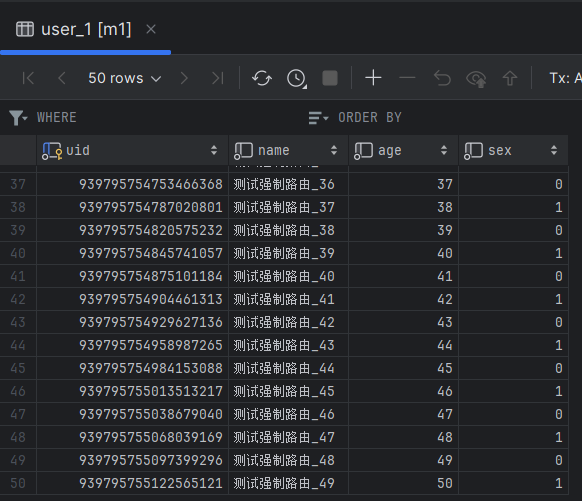
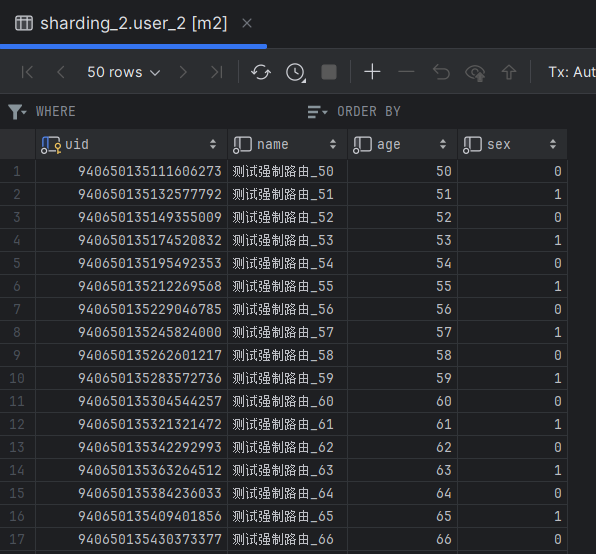
广播表
见名思意，就是在所有的数据库中都会存在的表，它一般是字典表。对他写的操作，会同步到所有库中。配置如下:
# 广播表, 见名思意，就是每个数据库中都会全量存一份的表
# 一般是配置表，表中数据变化比较少，关联次数比较多的表
spring.shardingsphere.sharding.broadcast-tables=dict
# 配置主键生成策略
spring.shardingsphere.sharding.tables.dict.key-generator.column=did
spring.shardingsphere.sharding.tables.dict.key-generator.type=SNOWFLAKE
由于比较简单，不再测试
总结
至此，几种分片策略已经演示完毕。标准和复合策略在项目中使用的最多。
关于分库分表，尽量在系统设计之初做。如果是现有系统，在现有可用的手段用尽之前（缓存，ES）不要考虑分库分表,带来的维护成本将非常大。
读写分离
ShardingSphere 使用读写分离比较简单，只需配置主从关系即可。
配置
# 读写分离配置示例
spring.shardingsphere.datasource.names=m1,s1
spring.shardingsphere.datasource.m1.type=com.alibaba.druid.pool.DruidDataSource
spring.shardingsphere.datasource.m1.driver-class-name=com.mysql.cj.jdbc.Driver
spring.shardingsphere.datasource.m1.url=jdbc:mysql://192.168.11.12:3340/sharding_1?serverTimezone=GMT%2B8
spring.shardingsphere.datasource.m1.username=root
spring.shardingsphere.datasource.m1.password=123456
spring.shardingsphere.datasource.s1.type=com.alibaba.druid.pool.DruidDataSource
spring.shardingsphere.datasource.s1.driver-class-name=com.mysql.cj.jdbc.Driver
spring.shardingsphere.datasource.s1.url=jdbc:mysql://192.168.11.12:3341/sharding_1?serverTimezone=GMT%2B8
spring.shardingsphere.datasource.s1.username=root
spring.shardingsphere.datasource.s1.password=123456
# ds0 是自定义的主从规则, 同时指定了主库是m1
spring.shardingsphere.sharding.master-slave-rules.ds0.master-data-source-name=m1
# 从库可以有多个，这里只配一个s1
spring.shardingsphere.sharding.master-slave-rules.ds0.slave-data-source-names[0]=s1
# 设置需要读写分离的表
spring.shardingsphere.sharding.tables.dict.actual-data-nodes=ds0.dict
# 配置主键生成策略
spring.shardingsphere.sharding.tables.dict.key-generator.column=did
spring.shardingsphere.sharding.tables.dict.key-generator.type=SNOWFLAKE
spring.shardingsphere.props.sql.show = true
spring.main.allow-bean-definition-overriding=true
测试插入
/**
* 测试读写分离插入
*/
@Test
public void insertDict() {
Dict dict = new Dict();
dict.setType(1);
dict.setKeyword(1);
dict.setValue("使用账号密码登录");
dictMapper.insert(dict);
dict = new Dict();
dict.setType(1);
dict.setKeyword(2);
dict.setValue("使用短信验证码登录");
dictMapper.insert(dict);
dict = new Dict();
dict.setType(2);
dict.setKeyword(1);
dict.setValue("开启设备绑定");
dictMapper.insert(dict);
dict = new Dict();
dict.setType(2);
dict.setKeyword(2);
dict.setValue("关闭设备绑定");
dictMapper.insert(dict);
}
运行方法，控制台如下输出:
2023-12-10 17:21:28.567 INFO 22224 --- [main] ShardingSphere-SQL: Actual SQL: m1 ::: INSERT INTO dict ( did, type, keyword, value ) VALUES (?, ?, ?, ?) ::: [1733778949163016193, 1, 1, 使用账号密码登录]
可以看到插入只在主库
测试查询
/**
* 测试读写分离查询
*/
@Test
public void queryDict() {
QueryWrapper<Dict> wrapper = new QueryWrapper<>();
wrapper.eq("type", 2).eq("keyword", 2);
List<Dict> dicts = dictMapper.selectList(wrapper);
for (Dict dict : dicts) {
System.out.println(dict);
}
}
控制台输出如下:
2023-12-10 17:23:08.519 INFO 9584 --- [main] ShardingSphere-SQL: Actual SQL: s1 ::: SELECT did,type,keyword,value FROM dict WHERE (type = ? AND keyword = ?) ::: [2, 2]
Dict{did=1733778950933012482, type=2, keyword=2, value='关闭设备绑定'}
可以看出查询只在从库 s1
联系方式: dccmmtop@foxmail.com